Cloudflare Images
Welcome to Lab 2 at Cloudflare Connect 2022 - This lab will focus on Uploading and Delivering Images via Cloudflare Images By the end of this lab you will have:
Uploaded images to Cloudflare via the API
Used Image variants
Seamlessly integrated Cloudflare Images and Pages
Cloudflare Images provides a straightforward, end-to-end solution to cost-effectively build and maintain your image infrastructure. Store, resize, and optimize images at scale using one unified product.
Learn More about Cloudflare Images!
Check out the Cloudflare Homepage to learn more
Clone Project & Connect KV Store (New Students)
Already Complete Lab 1?
If you have already completed Lab 1 Skip ahead to this section
Clone GitHub Repository
To make things easier we have setup a starter gallery app on GitHub. Lets fork and clone the repository.
gh repo fork cf-tme/connect_2022_lab1_complete
This should create a fork of the complete Lab 1 repository in your gh account. Follow the fork with a clone
gh repo clone <yourgithubusername>/connect_2022_lab1_complete
Now all the files should be local in your working directory, let navigate into the repo to start coding!
cd <yourgithubusername>/connect_2022_lab1_complete
Deploy project to Pages
Deploying our GitHub project to pages is as simple as connecting our GitHub account to Cloudflare.
Login to the Cloudflare Dashboard
Select Pages on the left hand side and press Create a Project and select Connect GitHub
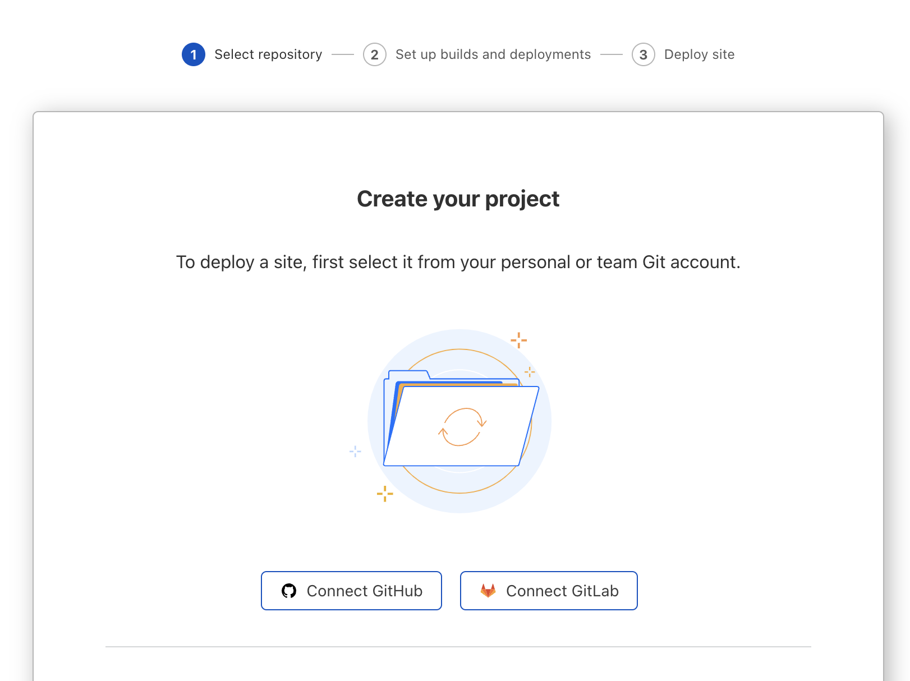
Authenticate to GitHub
If you are not already logged into GitHub in your browser you may be asked to re-authenticate
You will be prompted to Install and Authorize Cloudflare Pages to your github account, press the button to proceed.
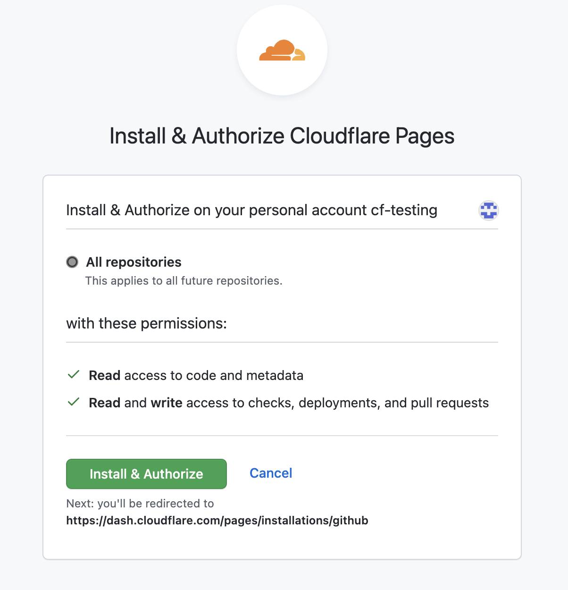
Once connected you will be brought back to the Cloudflare Pages dashboard. Select connect_2022_lab1_complete on the following page
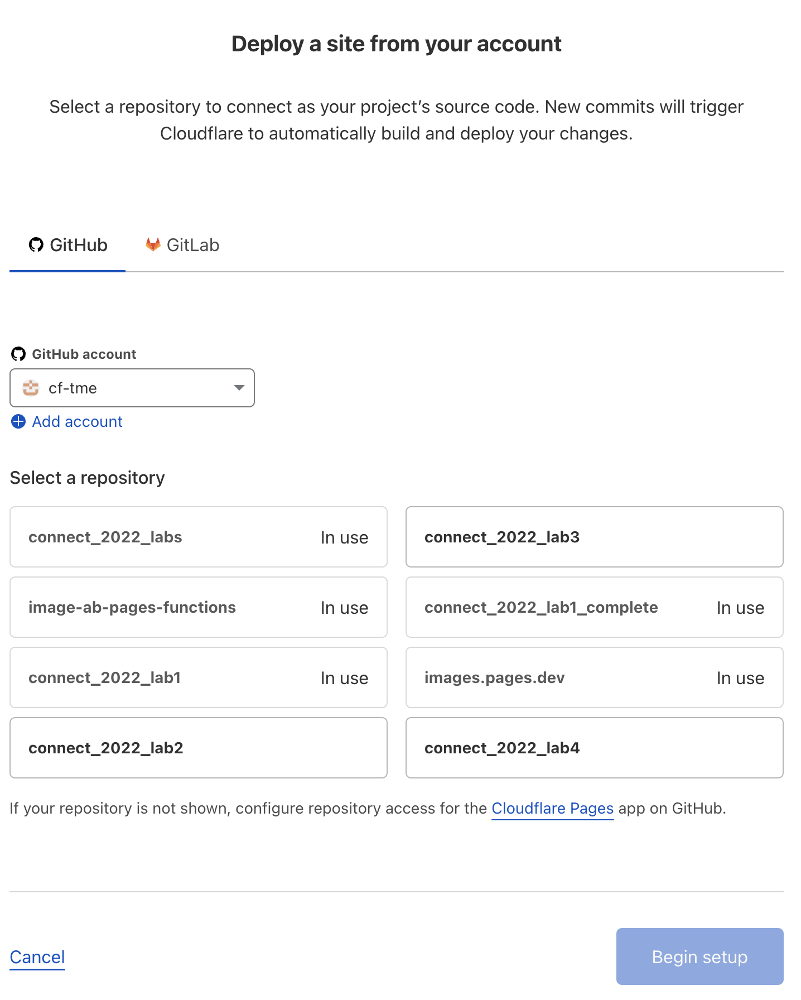
Once selected you will need to configure build parameters. This is build using React so we will set the following build parameters:
Project name - connect_2022_lab1_complete
Production branch - master
Framework preset - Create React App
Build command - npm run build
Build output directory - /build
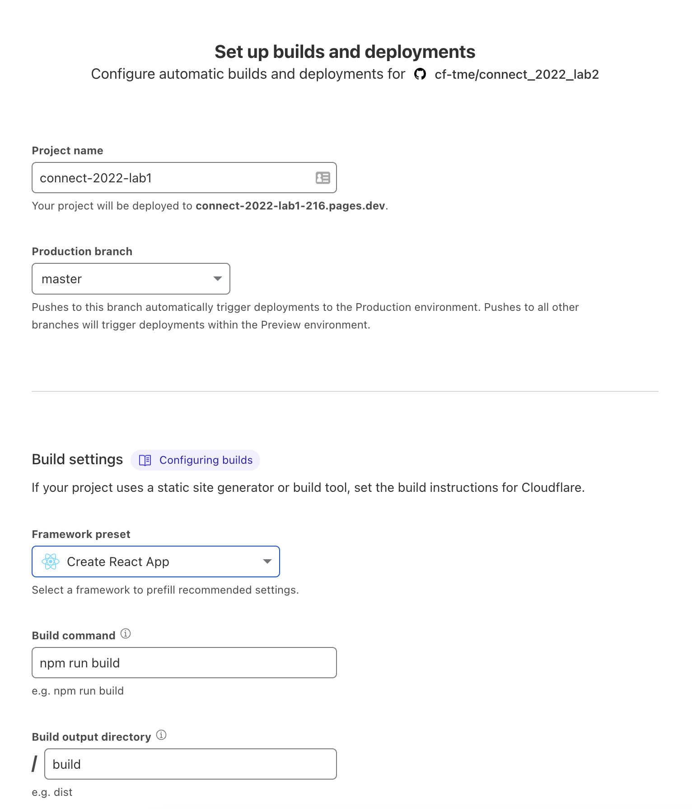
Press Deploy
Deployment Progress
Once started the deployment will take a few moments to complete - you can follow the deployment details to monitor progress of the deployment.
Once the deployment has completed you will be presented with a success message as well as a URL to visit your new project Select the link.
pages.dev Domain
By default new projects will automatically be given a *.pages.dev domain, If you would like to setup custom routes to your own domain you can do that through DNS CNAMEing (or directly in the project settings if your domain nameservers are Cloudflare)
Before we test out application we need to create and Bind a KV namespace
Creating an IMAGES KV Namespace
Our application has been written to read data from env.IMAGES - this means we need to bind our KV namespace to our project with the variable name “IMAGES”
From your Cloudflare account landing page navigate to Workers > KV
Verify Email
If you have not already confirmed your e-mail address for your Cloudflare Account you may be asked to Verify it here before creating any KV namespaces
Select Create Namespace and enter IMAGES in the Namespace Name and press Add
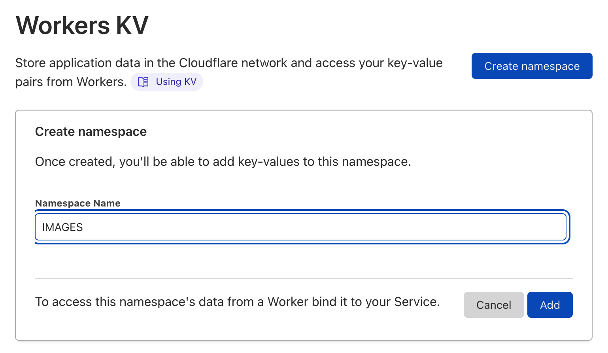
Namespace ID
Once your namespace is created you will be given a Namespace ID - this will be needed later on go ahead and take note of this id - you can always navigate back to this screen and grab it later if needed.
Binding KV Namespace to Pages Project
Once our Namespace is created we must bind it to our Pages project so that our functions can leverage the data inside.
Look Ahead
We will be using this namespace to store Image metadata that will then be read in dynamically update our gallery with images that we upload!
From the Left hand side navigation pane on the Cloudflare Dashboard select Pages then select our project connect_2022_lab1_complete
In the top navigation bar select Settings and then Functions On the left hand side.
Select Add binding under the KV namespace binding (under Production sub-tab)
Enter IMAGES in the Variable name and Select the IMAGES KV namespace from the dropdown. And press Save
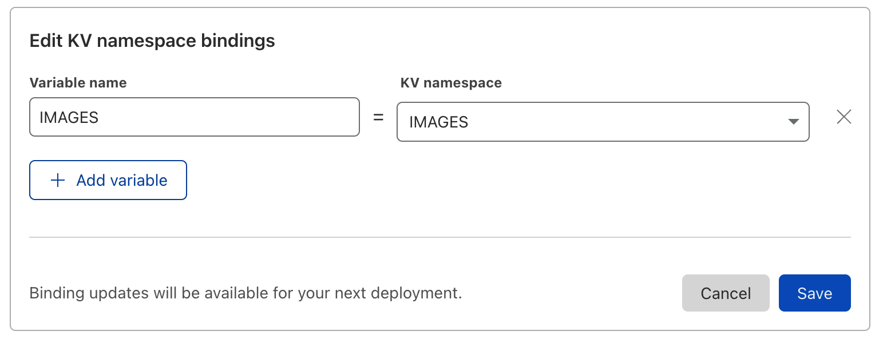
Manual Re-Deploy
In order for KV binding to take effect we need to rebuild the project - this is generally not an issue when live developing as a git push will force it but in this case to test a few things out we will manual kick off a re-deployment
Manually Re-Deploy Application
To kick off a manual re-deployment we must first select View build (in the bottom right) on the latest deployment of our application.
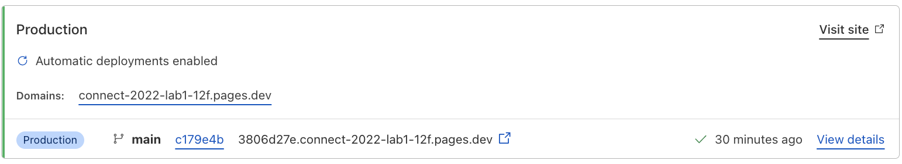
On the following page select Manage Deployment in the top right and press Retry Deployment
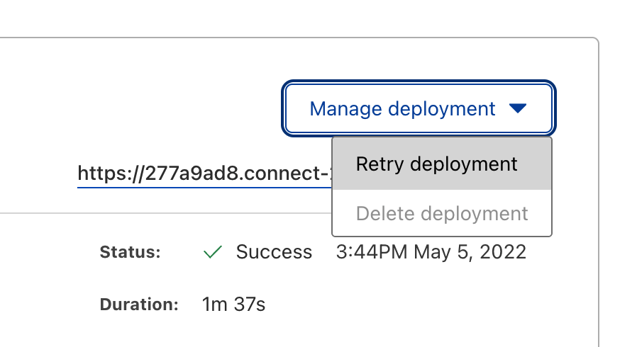
This will kickoff a manual deployment, give it a few moments to complete.
Congratulations you are now all caught up! If you navigate to the url that was generated for you Pages project you should see a blank gallery (plain blue page).
Generate API Keys for account
Before we can upload images or write values to our KV store with the API We need to generate API keys for our account.
Images API Key
Cloudflare Images is a Paid product, for this lab you will be using a shared Images account with provided API keys, in the real world you would swap out the Keys for your own.
To generate API keys navigate to the Cloudflare Dashboard, login and select your user on the top right and select My Profile
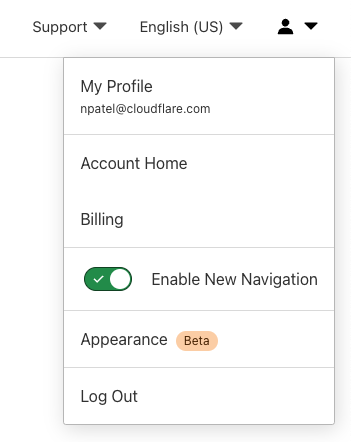
On the left navigation pane select API Tokens and press Create Token
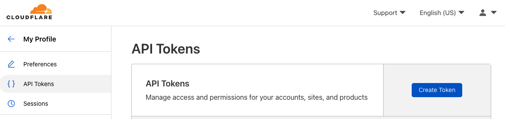
Select the Edit Cloudflare Workers as the template and press Use template
API Token Templates
API token templates are useful when trying to permit scoped access to API based applications, you even have the option to create a custom token with your desired permission level
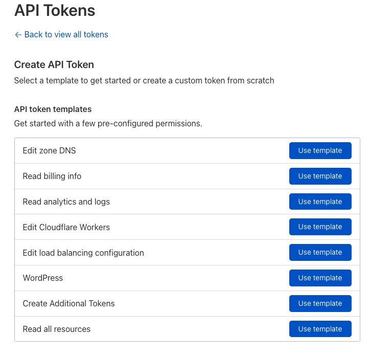
In the token settings you only need to set both the Account Resources and Zone Resources to Include All Accounts and All Zones
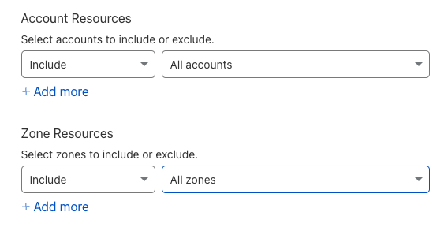 Some text!
With the changes made press Continue to summary and you should see something similar to below:
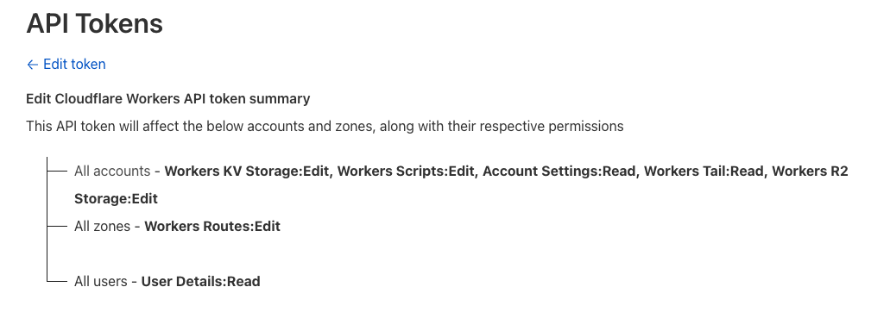
Press Create Token
On the following screen you will be presented with the the new API Token - it is *IMPORTANT to save this token value in a safe place as it will not be visible again once you navigate away from this page.
In addition to the api Token we will also need your accountID this value is simply found in the URL bar in the browser for your Cloudflare dashboard
https://dash.cloudflare.com/<accountid>
Before you Continue!
At this stage you should have 3 values that we will use next to configure and make API calls to Cloudflare
Account ID
API Token
KV Namespace ID (this was generated when we created the KV Namespace in this section)
Upload images and store metadata into KV
To simplify uploads and writing data to KV we have written a ready to run python script that can be cloned from GitHub and run.
Clone Image Upload Repository
gh repo fork cf-tme/connect_2022_lab2
This should create a fork of the complete Lab 2 repository in your gh account. Follow the fork with a clone
gh repo clone <yourgithubusername>/connect_2022_lab2
Now all the files should be local in your working directory, let navigate into the repo to start coding!
cd <yourgithubusername>/connect_2022_lab2
Edit the upload script
Open the upload_images.py Python script in your favorite editor.
Text Editor
VS Code is a versatile text editor that can be launched directly from the terminal using code
In the file editor identify the lines (lines 11-13) where you need to change values to reflect your account.
#CHANGE these are your value from your workers environment
kv_id = "ENTER YOU WORKERS KV NAMESPACE ID"
kv_account_id = "ENTER YOUR CLOUDFLARE ACCOUNT ID"
kv_token ="ENTER YOUR API TOKEN"
Before leaving the document take a moment to read through the comments on the code and see whats happening.
The script logic is build in 3 sections:
Upload a set of images from the local directory to Cloudflare Images
Collect data about uploaded images and structure metadata to be writing to KV Store
Write image metadata to KV store
Before we can run the script we need to install a python dependency - this is easy to do with a single command.
pip3 install requests
pip
pip is a python tool that can be used to quickly load python libraries that can be used in code. The requests library is a common import for most API based code as it provides a user friendly wrapper to the built in http request libraries in python.
With the dependencies resolved we can simply run our python script!
python upload_images.py
We should see success messages come onscreen as images are being uploaded and data is being written to your KV store.
uploaded image gallery-images/cat1.jpeg and added KV metadata with status True
uploaded image gallery-images/cat2.jpeg and added KV metadata with status True
uploaded image gallery-images/cat3.jpeg and added KV metadata with status True
uploaded image gallery-images/pup1.jpeg and added KV metadata with status True
uploaded image gallery-images/pup2.jpeg and added KV metadata with status True
uploaded image gallery-images/pup3.jpeg and added KV metadata with status True
Once this script is completed our Web Gallery should show these images. Lets confirm!
Confirm values in KV Store
From your Cloudflare account landing page navigate to Workers > KV
Select the IMAGES namespace
You should see a listing of the images uploaded with the same value “Values stored in metadata” - This is because the valuable information lives in the metadata of the KV pair and is not visible in the UI.
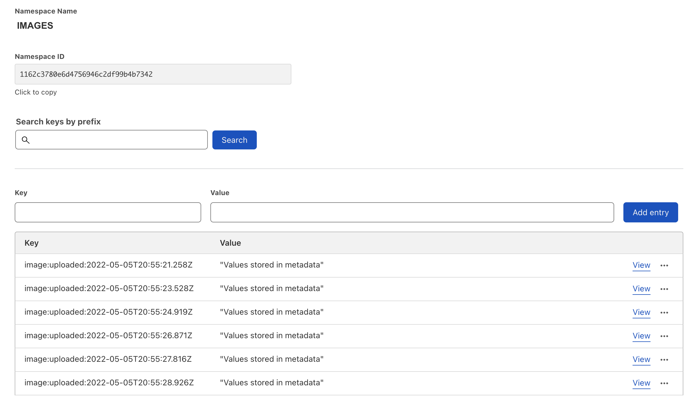
Now if we return to our Web application URL - https://<projectname>.pages.dev we should see a gallery of images!
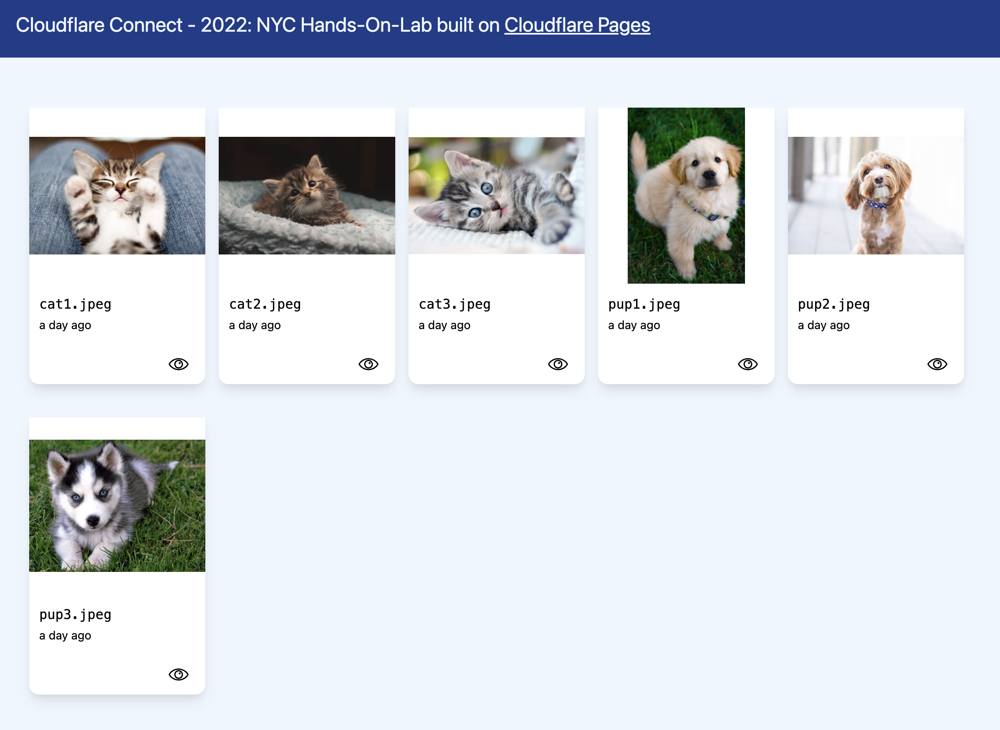
Additional confirmation
If you want to see the data that has been written into the KV store you can make the /api/images call in the web browser and check the data that is being read to fill the gallery on the homepage.
LAB 2 COMPLETE!
You have successfully Completed Lab 2! Congratulations on deploying a Full JAM stack application with Pages, Images, and KV Store.